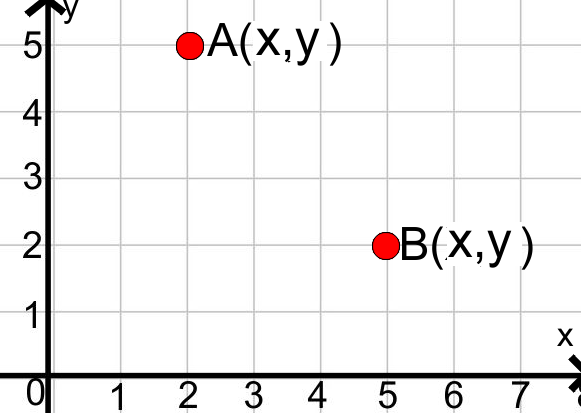

Rangkuman

Berikut ini adalah perbedaan dari penentuan posisi titik terhadap sumbu xy, titik asal dan titik acuan.
- Posisi titik A(x,y) terhadap sumbu xy adalah y satuan ke atas terhadap sumbu x dan x kanan satuan terhadap sumbu y.
- Posisi titik A(x,y) terhadap titik asal(0,0) adalah x satuan ke kanan dan y satuan
ke atas.
- Posisi titik A(x, y1) terhadap titik acuan B(x2, y2) adalah (x1 - x2, y1 - y2)